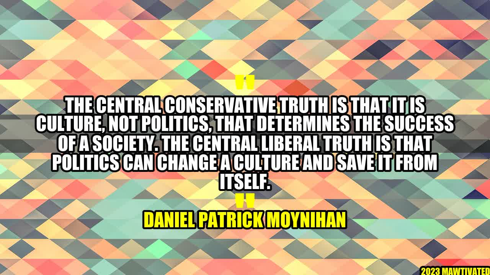

The Power of Culture and Politics

An Inspiring Story
Imagine a small town that was once abundant with life and prosperity, but now struggles with poverty and crime. The town has tried various political solutions, but none have managed to bring about the change the people long for. However, an incredible thing happens when a group of young artists and musicians move into town. They begin to influence the culture of the community by creating beautiful works of art, and their music draws crowds from neighboring towns. Local businesses begin to thrive as people flock to the area, causing a chain reaction of positive change. This is the power of culture in action.
The Central Conservative Truth
This story brings us to the central conservative truth: culture, not politics, determines the success of a society. Culture refers to the practices, customs, and values that define a group of people. It is the shared history and identity that brings a community together. When culture is strong, it can move mountains, but when it's weak, it can lead to social decay. For example, take a society where individualism and consumerism are the dominant cultural values. This culture can lead to people being detached from their communities and prioritizing their own interests over the greater good. This can lead to a lack of trust, a breakdown of social norms, and weak institutions.
The Central Liberal Truth
However, the central liberal truth is that politics can change a culture and save it from itself. Politics is the arena where we make decisions about how we want to live together. It is where we allocate resources, make laws, and establish institutions that shape our lives. For instance, there are many examples of politicians who have used politics to fight against harmful cultural practices. In the United States, Daniel Patrick Moynihan was a Senator who advocated for welfare reform by arguing that certain policies incentivized single motherhood and led to a high rate of unemployment. By advocating for change through policy, Moynihan believed that he could change the cultural norms and create a more productive society.
Examples
Throughout history, we have seen both the power of culture and politics in action. The emergence of hip-hop culture in the United States, for example, was a cultural movement that gave voice to marginalized communities. Hip-hop artists spoke about the struggles of poverty, racism, and police brutality in their music, which had a profound impact on American culture. They challenged the status quo and encouraged young people to take ownership of their lives and communities. Similarly, when President Roosevelt created the New Deal in response to the Great Depression, he used politics to change the culture of dependency that had emerged. By providing social programs that helped people get back on their feet, Roosevelt sought to create a "safety net" that promoted self-sufficiency and productivity.
Conclusion
In conclusion, the central conservative truth is that culture, not politics, determines the success of a society. However, the central liberal truth is that politics can change a culture and save it from itself. Here are three takeaways: 1. Culture matters. We need strong communities that share common values to thrive. 2. Politics can be a powerful tool to create positive change, but it's important to be intentional and strategic in how we use it. 3. Ultimately, we need a balance between culture and politics to create a better world.
Hashtags
#CultureMatters #PoliticsandCulture #ChangeThroughCulture #CreatingPositiveChange #CommunityBuilding
SEO Keywords
Culture, Politics, Success, Society, Change, Community
Article Category
Sociology/Politics/Culture
Curated by Team Akash.Mittal.Blog
Curated by Team Akash.Mittal.Blog
Share on Twitter Share on LinkedIn